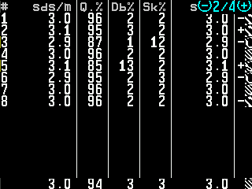
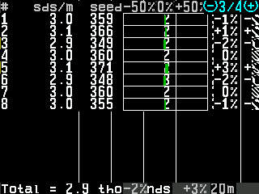
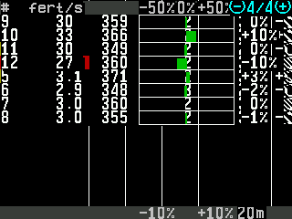
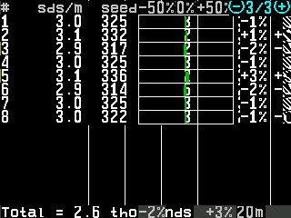
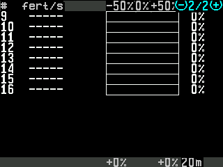

L'écran du tableau de semis
Les relevés de chaque rang de semis en chiffres, une ligne par rang — quels tableaux votre machine possède, ce que signifie chaque colonne et chaque couleur, et comment remettre les relevés à zéro.
Le tableau de semis (« Seeding table ») répond à ce que le diagramme de l'écran d'accueil ne peut pas dire : quel rang exactement, et de combien. Ouvrez-le avec « HOME » depuis l'écran d'accueil ; le « HOME » suivant passe à l'écran Statistics, « BACK » ramène à l'écran d'accueil.
Les chiffres appartiennent à la session de travail : ils comptent depuis la mise sous tension et sont perdus à l'arrêt. Les statistiques de parcelle sont conservées à part — voir L'écran Statistics.
Ce que montre le tableau

- Numéro de rang — le rang de semis, dans l'ordre des rangs de la machine.
- sds/m — la dose mesurée à l'instant présent, en graines par mètre. ----- — le rang est surveillé mais ne sème pas.
- Q.% — qualité : la part des graines déposées une à une, comme prévu.
- Db% — doubles : deux graines là où une était prévue.
- Sk% — manques : un vide là où une graine était prévue.
- Indicateur de page — ce tableau et le nombre de tableaux, entre les signes de « MINUS » et « PLUS », les boutons qui changent de tableau. Absent s'il n'y a qu'un seul tableau.
- Population du rang, en milliers de graines par hectare.
- Moyennes sur tous les rangs surveillés. Avec deux groupes de capteurs, deux lignes de ce genre, A et B.
Les colonnes 3 à 7 se rapportent au dernier intervalle de recalcul terminé — le tronçon réglé par « Recalculation,m » (recalcul, m) (ou « Recalculation,sec » (recalcul, s) sans capteur de vitesse), affiché en bas à droite. Seule la colonne 2 est un relevé en direct. Après l'arrêt de la machine, les chiffres du dernier intervalle restent à l'écran pour être lus à loisir. Une colonne supplémentaire, %, donne l'écart de chaque rang par rapport à la consigne, avec son signe ; positif signifie plus de graines et un écartement plus serré.
Quels tableaux possède votre machine
| Tableau | Affiché lorsque |
|---|---|
| Rate per area (population, ks/Ha), Rate per distance (graines par mètre) | Semences en mode « Precise ». |
| Seed counters | Toujours. |
| Dry fertilizer | Il y a des capteurs d'engrais et leur mode n'est pas « Precise ». |
| Liquid fertilizer | Il y a des capteurs d'engrais liquide. |
Un semoir monograine avec les semences en mode « Precise » et des capteurs d'engrais solide a quatre tableaux. « PLUS » passe au suivant, « MINUS » au précédent ; l'indicateur de page en haut à droite montre lequel est affiché.




Si les semences et l'engrais sont tous deux en mode « Precise », les rangs d'engrais apparaissent dans les tableaux de semences comme groupe B, en caractères jaune clair.

Sur le tableau Seed counters, la barre s'étend entre l'écart admis « Rate error,% » (erreur de dose, %) de part et d'autre de la consigne — pas sur une échelle fixe. Dans les modes « Flow » (débit) et « Hybrid » (hybride), l'échelle est fixée de −50 % à +50 %. La colonne de gauche affiche alors des graines par seconde au lieu de graines par mètre.
Repères et couleurs
| Dans la colonne de dose | Signification |
|---|---|
| ----- | Surveillé, ne sème pas actuellement. |
| ! ---, toute la ligne en gris | Mis hors surveillance. |
| X ---, toute la ligne en rouge foncé | Pas de liaison avec ce capteur. |
| ? ---, toute la ligne en rouge foncé | Un capteur de mauvais type répond ici. |
Pendant le semis, une cellule devient jaune lorsqu'elle atteint plus de la moitié de l'écart admis et rouge lorsqu'elle le dépasse. Les limites sont « Rate error,% », « Doubles error,% » (erreur de doubles, %) et « Skips error,% » (erreur de manques, %) des capteurs de graines ; si le contrôle des doubles ou des manques est désactivé, « Scale S&D,% » (échelle manques et doubles, %) est utilisé. Le numéro de rang prend la couleur de sa pire cellule, de sorte que le rang qui se distingue se repère d'un coup d'œil.
Boutons
| Bouton | Ce qu'il fait |
|---|---|
| « PLUS » / « MINUS » | Tableau suivant / précédent. |
| « DOWN » / « UP » | Fait défiler d'une ligne. Un toucher est une ligne. |
| « MENU » | Demande « Zero readings? » (remettre les relevés à zéro ?) — Remettre les relevés à zéro. |
| « HOME » | Statistics. |
| « BACK » | Écran d'accueil. |
Le tableau lui-même ne réagit pas au toucher.
Tableaux d'engrais et rangs de jalonnage

Le tableau Dry fertilizer est construit comme le tableau Seed counters, avec fert/m en mode « Hybrid » ou fert/s en « Flow » ; le nombre de pièces n'est affiché qu'avec « Count seeds always » (toujours compter les graines) activé. Le tableau Liquid fertilizer montre par rang le débit et les litres appliqués, avec L/Ha ou L/min selon « Mode of liq.fert. » (mode de l'engrais liquide), et n'a pas de barre d'écart.
Un rang coupé pour un jalonnage n'affiche que son numéro et son débit ; les autres colonnes sont en tirets. Ici, le jaune et le rouge avertissent que plus de semences tombent dans le jalonnage que ne le permet « Toler.sowing to tramline,% » (tolérance de semis dans le jalonnage, %).

Votre machine fait quelque chose que cette page n'explique pas ? Écrivez à support@agriwelt.com — un ingénieur vous répond.